Home / Past papers / MLF Quiz 2 / this paper
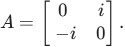
Which of the following statements is correct?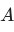
is Hermitian only.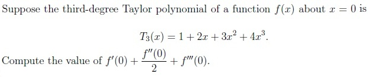
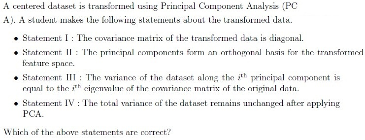
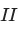
only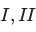
and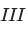
only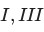
and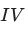
only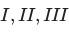
and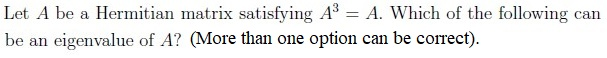
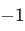
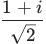
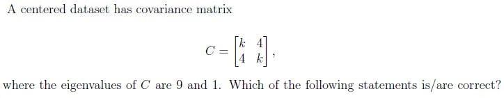
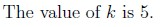
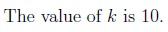
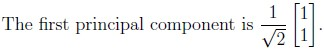
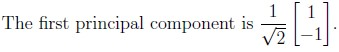
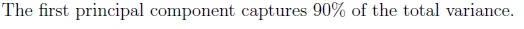
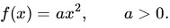
Gradient descent is used to minimize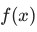
with learning rate . Which of the following statements is/are correct?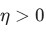
.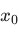
.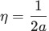
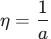
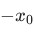
for any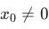
.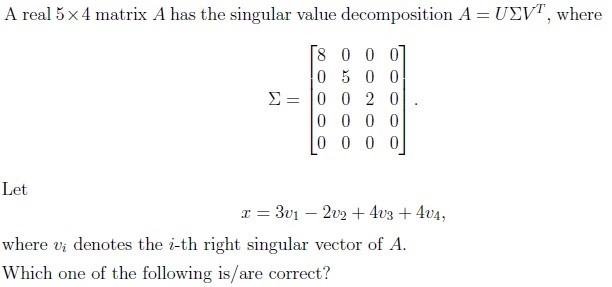
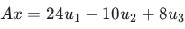
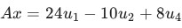
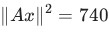
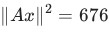
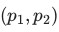
denote the point on the line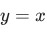
that is closest to the point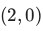
. Find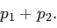
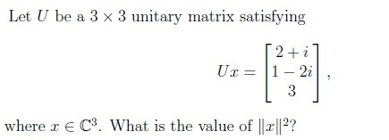
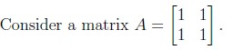
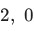
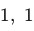
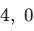
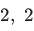
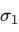
and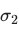
denote the singular values of the matrix . Find the value of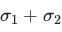
.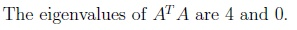
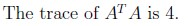
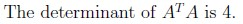
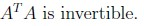